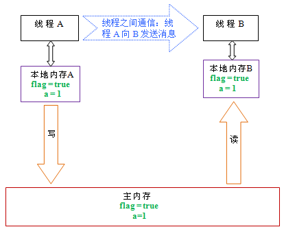

深入理解Java内存模型（四）——volatile
本文属于作者原创，原文发表于InfoQ：http://www.infoq.com/cn/articles/java-memory-model-4
volatile的特性
当我们声明共享变量为volatile后，对这个变量的读/写将会很特别。理解volatile特性的一个好方法是：把对volatile变量的单个读/写，看成是使用同一个锁对这些单个读/写操作做了同步。下面我们通过具体的示例来说明，请看下面的示例代码：
class VolatileFeaturesExample {
//使用volatile声明64位的long型变量
volatile long vl = 0L;
public void set(long l) {
vl = l; //单个volatile变量的写
}
public void getAndIncrement () {
vl++; //复合（多个）volatile变量的读/写
}
public long get() {
return vl; //单个volatile变量的读
}
}
假设有多个线程分别调用上面程序的三个方法，这个程序在语义上和下面程序等价：
class VolatileFeaturesExample {
long vl = 0L; // 64位的long型普通变量
//对单个的普通 变量的写用同一个锁同步
public synchronized void set(long l) {
vl = l;
}
public void getAndIncrement () { //普通方法调用
long temp = get(); //调用已同步的读方法
temp += 1L; //普通写操作
set(temp); //调用已同步的写方法
}
public synchronized long get() {
//对单个的普通变量的读用同一个锁同步
return vl;
}
}
如上面示例程序所示，对一个volatile变量的单个读/写操作，与对一个普通变量的读/写操作使用同一个锁来同步，它们之间的执行效果相同。
锁的happens-before规则保证释放锁和获取锁的两个线程之间的内存可见性，这意味着对一个volatile变量的读，总是能看到（任意线程）对这个volatile变量最后的写入。
锁的语义决定了临界区代码的执行具有原子性。这意味着即使是64位的long型和double型变量，只要它是volatile变量，对该变量的读写就将具有原子性。如果是多个volatile操作或类似于volatile++这种复合操作，这些操作整体上不具有原子性。
简而言之，volatile变量自身具有下列特性：
- 可见性。对一个volatile变量的读，总是能看到（任意线程）对这个volatile变量最后的写入。
- 原子性：对任意单个volatile变量的读/写具有原子性，但类似于volatile++这种复合操作不具有原子性。
volatile的写-读建立的happens before关系
上面讲的是volatile变量自身的特性，对程序员来说，volatile对线程的内存可见性的影响比volatile自身的特性更为重要，也更需要我们去关注。
从JSR-133开始，volatile变量的写-读可以实现线程之间的通信。
从内存语义的角度来说，volatile与锁有相同的效果：volatile写和锁的释放有相同的内存语义；volatile读与锁的获取有相同的内存语义。
请看下面使用volatile变量的示例代码：
class VolatileExample {
int a = 0;
volatile boolean flag = false;
public void writer() {
a = 1; //1
flag = true; //2
}
public void reader() {
if (flag) { //3
int i = a; //4
……
}
}
}
假设线程A执行writer()方法之后，线程B执行reader()方法。根据happens before规则，这个过程建立的happens before 关系可以分为两类：
- 根据程序次序规则，1 happens before 2; 3 happens before 4。
- 根据volatile规则，2 happens before 3。
- 根据happens before 的传递性规则，1 happens before 4。
上述happens before 关系的图形化表现形式如下：

在上图中，每一个箭头链接的两个节点，代表了一个happens before 关系。黑色箭头表示程序顺序规则；橙色箭头表示volatile规则；蓝色箭头表示组合这些规则后提供的happens before保证。
这里A线程写一个volatile变量后，B线程读同一个volatile变量。A线程在写volatile变量之前所有可见的共享变量，在B线程读同一个volatile变量后，将立即变得对B线程可见。
volatile写-读的内存语义
volatile写的内存语义如下：
- 当写一个volatile变量时，JMM会把该线程对应的本地内存中的共享变量刷新到主内存。
以上面示例程序VolatileExample为例，假设线程A首先执行writer()方法，随后线程B执行reader()方法，初始时两个线程的本地内存中的flag和a都是初始状态。下图是线程A执行volatile写后，共享变量的状态示意图：

如上图所示，线程A在写flag变量后，本地内存A中被线程A更新过的两个共享变量的值被刷新到主内存中。此时，本地内存A和主内存中的共享变量的值是一致的。
volatile读的内存语义如下：
- 当读一个volatile变量时，JMM会把该线程对应的本地内存置为无效。线程接下来将从主内存中读取共享变量。
下面是线程B读同一个volatile变量后，共享变量的状态示意图：

如上图所示，在读flag变量后，本地内存B已经被置为无效。此时，线程B必须从主内存中读取共享变量。线程B的读取操作将导致本地内存B与主内存中的共享变量的值也变成一致的了。
如果我们把volatile写和volatile读这两个步骤综合起来看的话，在读线程B读一个volatile变量后，写线程A在写这个volatile变量之前所有可见的共享变量的值都将立即变得对读线程B可见。
下面对volatile写和volatile读的内存语义做个总结：
- 线程A写一个volatile变量，实质上是线程A向接下来将要读这个volatile变量的某个线程发出了（其对共享变量所在修改的）消息。
- 线程B读一个volatile变量，实质上是线程B接收了之前某个线程发出的（在写这个volatile变量之前对共享变量所做修改的）消息。
- 线程A写一个volatile变量，随后线程B读这个volatile变量，这个过程实质上是线程A通过主内存向线程B发送消息。
volatile内存语义的实现
下面，让我们来看看JMM如何实现volatile写/读的内存语义。
前文我们提到过重排序分为编译器重排序和处理器重排序。为了实现volatile内存语义，JMM会分别限制这两种类型的重排序类型。下面是JMM针对编译器制定的volatile重排序规则表：
| 是否能重排序 | 第二个操作 | ||
| 第一个操作 | 普通读/写 | volatile读 | volatile写 |
| 普通读/写 | NO | ||
| volatile读 | NO | NO | NO |
| volatile写 | NO | NO | |
举例来说，第三行最后一个单元格的意思是：在程序顺序中，当第一个操作为普通变量的读或写时，如果第二个操作为volatile写，则编译器不能重排序这两个操作。
从上表我们可以看出：
- 当第二个操作是volatile写时，不管第一个操作是什么，都不能重排序。这个规则确保volatile写之前的操作不会被编译器重排序到volatile写之后。
- 当第一个操作是volatile读时，不管第二个操作是什么，都不能重排序。这个规则确保volatile读之后的操作不会被编译器重排序到volatile读之前。
- 当第一个操作是volatile写，第二个操作是volatile读时，不能重排序。
为了实现volatile的内存语义，编译器在生成字节码时，会在指令序列中插入内存屏障来禁止特定类型的处理器重排序。对于编译器来说，发现一个最优布置来最小化插入屏障的总数几乎不可能，为此，JMM采取保守策略。下面是基于保守策略的JMM内存屏障插入策略：
- 在每个volatile写操作的前面插入一个StoreStore屏障。
- 在每个volatile写操作的后面插入一个StoreLoad屏障。
- 在每个volatile读操作的后面插入一个LoadLoad屏障。
- 在每个volatile读操作的后面插入一个LoadStore屏障。
上述内存屏障插入策略非常保守，但它可以保证在任意处理器平台，任意的程序中都能得到正确的volatile内存语义。
下面是保守策略下，volatile写插入内存屏障后生成的指令序列示意图：

上图中的StoreStore屏障可以保证在volatile写之前，其前面的所有普通写操作已经对任意处理器可见了。这是因为StoreStore屏障将保障上面所有的普通写在volatile写之前刷新到主内存。
这里比较有意思的是volatile写后面的StoreLoad屏障。这个屏障的作用是避免volatile写与后面可能有的volatile读/ 写操作重排序。因为编译器常常无法准确判断在一个volatile写的后面，是否需要插入一个StoreLoad屏障（比如，一个volatile写之后 方法立即return）。为了保证能正确实现volatile的内存语义，JMM在这里采取了保守策略：在每个volatile写的后面或在每个 volatile读的前面插入一个StoreLoad屏障。从整体执行效率的角度考虑，JMM选择了在每个volatile写的后面插入一个 StoreLoad屏障。因为volatile写-读内存语义的常见使用模式是：一个写线程写volatile变量，多个读线程读同一个volatile 变量。当读线程的数量大大超过写线程时，选择在volatile写之后插入StoreLoad屏障将带来可观的执行效率的提升。从这里我们可以看到JMM 在实现上的一个特点：首先确保正确性，然后再去追求执行效率。
下面是在保守策略下，volatile读插入内存屏障后生成的指令序列示意图：

上图中的LoadLoad屏障用来禁止处理器把上面的volatile读与下面的普通读重排序。LoadStore屏障用来禁止处理器把上面的volatile读与下面的普通写重排序。
上述volatile写和volatile读的内存屏障插入策略非常保守。在实际执行时，只要不改变volatile写-读的内存语义，编译器可以根据具体情况省略不必要的屏障。下面我们通过具体的示例代码来说明：
class VolatileBarrierExample {
int a;
volatile int v1 = 1;
volatile int v2 = 2;
void readAndWrite() {
int i = v1; //第一个volatile读
int j = v2; // 第二个volatile读
a = i + j; //普通写
v1 = i + 1; // 第一个volatile写
v2 = j * 2; //第二个 volatile写
}
… //其他方法
}
针对readAndWrite()方法，编译器在生成字节码时可以做如下的优化：
注意，最后的StoreLoad屏障不能省略。因为第二个volatile写之后，方法立即return。此时编译器可能无法准确断定后面是否会有volatile读或写，为了安全起见，编译器常常会在这里插入一个StoreLoad屏障。
上面的优化是针对任意处理器平台，由于不同的处理器有不同“松紧度”的处理器内存模型，内存屏障的插入还可以根据具体的处理器内存模型继续优化。以x86处理器为例，上图中除最后的StoreLoad屏障外，其它的屏障都会被省略。
前面保守策略下的volatile读和写，在 x86处理器平台可以优化成：
前文提到过，x86处理器仅会对写-读操作做重排序。X86不会对读-读，读-写和写-写操作做重排序，因此在x86处理器中会省略掉这三种操作类 型对应的内存屏障。在x86中，JMM仅需在volatile写后面插入一个StoreLoad屏障即可正确实现volatile写-读的内存语义。这意 味着在x86处理器中，volatile写的开销比volatile读的开销会大很多（因为执行StoreLoad屏障开销会比较大）。
JSR-133为什么要增强volatile的内存语义
在JSR-133之前的旧Java内存模型中，虽然不允许volatile变量之间重排序，但旧的Java内存模型允许volatile变量与普通变量之间重排序。在旧的内存模型中，VolatileExample示例程序可能被重排序成下列时序来执行：
在旧的内存模型中，当1和2之间没有数据依赖关系时，1和2之间就可能被重排序（3和4类似）。其结果就是：读线程B执行4时，不一定能看到写线程A在执行1时对共享变量的修改。
因此在旧的内存模型中 ，volatile的写-读没有锁的释放-获所具有的内存语义。为了提供一种比锁更轻量级的线程之间通信的机制，JSR-133专家组决定增强 volatile的内存语义：严格限制编译器和处理器对volatile变量与普通变量的重排序，确保volatile的写-读和锁的释放-获取一样，具 有相同的内存语义。从编译器重排序规则和处理器内存屏障插入策略来看，只要volatile变量与普通变量之间的重排序可能会破坏volatile的内存 语意，这种重排序就会被编译器重排序规则和处理器内存屏障插入策略禁止。
由于volatile仅仅保证对单个volatile变量的读/写具有原子性，而锁的互斥执行的特性可以确保对整个临界区代码的执行具有原子性。在 功能上，锁比volatile更强大；在可伸缩性和执行性能上，volatile更有优势。如果读者想在程序中用volatile代替监视器锁，请一定谨 慎，具体细节请参阅参考文献5。。
作者简介
程晓明，Java软件工程师，国家认证的系统分析师、信息项目管理师。专注于并发编程。个人邮箱：asst2003@163.com。
参考文献
- Concurrent Programming in Java™: Design Principles and Pattern
- JSR 133 (Java Memory Model) FAQ
- JSR-133: Java Memory Model and Thread Specification
- The JSR-133 Cookbook for Compiler Writers
- Java 理论与实践: 正确使用 Volatile 变量
- Java theory and practice: Fixing the Java Memory Model, Part 2
原创文章，转载请注明： 转载自并发编程网 – ifeve.com本文链接地址: 深入理解Java内存模型（四）——volatile

程晓明
Latest posts by 程晓明 (see all)
- 双重检查锁定与延迟初始化 - 2013年10月10日
- 深入理解Java内存模型（七）——总结 - 2013年3月16日
- 深入理解Java内存模型（六）——final - 2013年3月10日

 添加本文到我的收藏
添加本文到我的收藏

 (8 votes, average: 4.88 out of 5)
(8 votes, average: 4.88 out of 5)

对于你提供的第一个例子，个人认为是有问题的，想拿出来大家聊一下
public void getAndIncrement () {
vl++; //复合（多个）volatile变量的读/写
}
在我的印象中，volatile的语义，应该仅仅能保证变量的可见性而无法保证原子性，所以，你在第二段代码中把上面的代码翻译成
public void getAndIncrement () { //普通方法调用
long temp = get(); //调用已同步的读方法
temp += 1L; //普通写操作
set(temp); //调用已同步的写方法
}
是不对的，你觉得我说的对么？
JSR-133内存模型规范规定，volatile变量的读/写具有原子性。
在《JSR-133: JavaTM Memory Model and Thread Specification》
的“12 Non-atomic Treatment of double and long”一章，有下面相关论述：
Write and reads of volatile long and double values are always atomic.
……
VM implementors are encouraged to avoid splitting their 64-bit values where possible. Programmers
are encouraged to declare shared 64-bit values as volatile or synchronize their programs
correctly to avoid possible complications.
上面这段话的大意是说：
写和读 volatile long和volatile double 总是具有原子性。
……
鼓励虚拟机的具体实现，不要把64位变量的读/写分割为2个32位的读/写操作。鼓励程序员把（在多线程之间共享的）64位变量声明为为volatile ，或者对程序做正确的同步处理。通过这两种方式来避免可能出现的并发问题。
是不是想这种和当前有关的变量是不是最好不好使用volatile来使其同步(也不能提供原子性吧)？
Nice! How can I sign up for RSS to your blog? Thanks!
非常好的文章，但你的例子用的都是 基本类型，对于引用类型会怎样呢？按链接 http://ifeve.com/volatile-array-visiblity/ 描述，数组引用可以保证可见性，但此数组元素不可以无法保证。那么 其他引用类型 也和数组情况一样吗？
问题描述如下：
volatile v 包含很多 fields(f1, f2, f3)
当线程访问 v 时，肯定总是可以访问到 最新的 v对象。我现在问题是，v里面的fx也总是可以访问到最新的嘛？
假设
v.f2是 hashMap1，线程A v.f2=hashMap2；则线程B 访问 v.f2，能保证看到 hashMap2 嘛，能看到 hashMap2中的最新对象嘛？
v.f3是 boolean，线程A v.f3=true；则线程B 访问 v.f3，能保证看到 true 嘛？
兄弟，由于一些事情要处理，到现在才能回复你，不好意思阿。
那么 其他引用类型 也和数组情况一样吗？
–对
v里面的fx也总是可以访问到最新的嘛？
–不一定能访问到最新的值
能保证看到 hashMap2 嘛，能看到 hashMap2中的最新对象嘛？
–不能保证
v.f3是 boolean，线程A v.f3=true；则线程B 访问 v.f3，能保证看到 true 嘛？
–不能保证
有时候我觉得发现了真相，但，接下来却又是迷雾重重 🙂
感谢回复啊，谢谢。不过又出来 new question 啦
Doug Lea 说：ConcurrentHashMap的readValueUnderLock()在 new JMM 下 不会 被调用；但，按着你上面的解释（即：只有volatile v 引用本身可以保证被 线程B 看到，v的field（假设为v.fx）是不能保证被 线程B 看到的），此方法却依然是需要的。
我来描述下
在ConcurrentHashMap的代码实现中，readValueUnderLock()出现的原因应该和我们这里讨论的一样，即：volatile v 可以保证被 线程B 看到，但是，v的某个field（假设v.f），并不能保证被 线程B 看到。
先看这个：http://hi.baidu.com/jeffeyliu/item/06881101d3bd1d11cc34ea9a
再看下这个：
http://stackoverflow.com/questions/5002428/concurrenthashmap-reorder-instruction
我们只讨论 new JMM
Doug Lea的结论是：在 new JMM 中，get()永远用不到 readValueUnderLock()。但我觉得不对
1. 线程A put()时，new HashEntry()被放入
2. 在 线程A 调用put()方法的 unlock()语句前，线程B 调用get()，假设新放入的 HashEntry引用 能被 线程B 看到，但是，HashEntry的 volatile value 不一定被看到啊，从而 readValueUnderLock()依然需要（可是，Doug Lea大神的结论是：此方法不需要）
事实上，线程A 的 put() 将 新的 HashEntry放入 tab时，tab是volatile的，tab保证能被 线程B 看到，但是，新的 HashEntry怎么就保证被 线程B 看到了呢（HashEntry应该也不保证会被 线程B 看到的，因为 volatile tab数组的元素 是不能保证被 线程B 看到的）
我有两点看法：
1：Doug Lea的结论的原始出处在哪里？或者有什么证据能证明这就是Doug Lea说的？我印象中，Doug Lea说话一般很谨慎。stackoverflow上网友的回复无法证明这是Doug Lea说的话。
2：我们假设1是成立的，那么我们需要知道Doug Lea说这个话的上下文。ConcurrentHashMap不同版本之间的代码会有变化，比如JDK5和JDK7中的源代码实现有比较大的差异。他这个结论是针对那个版本？
stackoverflow上网友的回答是带有链接的
It can all be viewed here, here指向 Doug Lea 的帖子
下面仅代表我个人的观点，供你参考。
综合Doug Lea 的回答和ConcurrentHashMap的源代码注释，Doug Lea 说:ConcurrentHashMap的readValueUnderLock()在 new JMM 下 不会 被调用。原因并非是你说的“tab是volatile”。
Doug Lea在源代码注释和论坛的回复中，都没有提到“tab是volatile”。
Doug Lea在论坛上的答复，意思大致如下：
这个方法可能从来不会被调用（注意Doug Lea的用词），JLS/JMM 没有绝对禁止ConcurrentHashMap会去调用这个方法。
processor/compiler 没有真实存在的漏洞会导致读线程读取到null值。
而且null值读现象，可能会被查明不可能真实存在（也许有一天，JLS/JMM 的修订版会填补这个空白来澄清这一点）。
Bill Pugh 建议Doug Lea谨慎，保守的对待这个问题。
所以Doug Lea增加了readValueUnderLock（）方法。
简单来说，这是JLS/JMM的疏忽导致的问题。
JLS/JMM没有明确定义：当一个写线程构造一个包含volatile的对象时，另一个读线程读到对象时，是否也一定能读到这个对象包含的volatile域的值。
Doug Lea个人认为，processor/compiler 没有任何漏洞，会导致读线程看不到volatile被写线程在构造函数中写入后的值。
但由于JLS/JMM没有明确定义这种情形，所以他做了防御性的编程（添加一个可能从来不会被调用的readValueUnderLock（）方法）。
我的理解是ConcurrentHashMap中的readValueUnderLock()是实际没有机会执行的。
根据JMM针对编译器制定的volatile重排序规则表，第一个操作是volatile写，第二个操作是普通读写，是可以重排序的，那么如下面的源 码，value的值有可能读到null；但是为了实现JMM规定的volatile的内存语义，编译器在生成字节码时采取了保守的内存屏障插入策略：在每 个volatile写操作的后面插入一个StoreLoad屏障。
StoreLoad Barriers是一个“全能型”的屏障，它同时具有其他三个屏障的效果。执行该屏障开销会很昂贵，因为当前处理器通常要把写缓冲区中的数据全部刷新到内 存中（buffer fully flush）。所以value无论如何都不会读到null，readValueUnderLock()是没有机会执行的
static final class HashEntry {
final K key;
final int hash;
volatile V value;
final HashEntry next;
HashEntry(K key, int hash, HashEntry next, V value) {
this.key = key;
this.hash = hash;
this.next = next;
this.value = value;
}
对value的赋值是第一个volatile写操作；
把构造出来的对象赋给引用是第二个普通写操作。
根据文章中的理论
我对上面您的描述发表下自己个人观点：
1. volatile 修饰 tab 数组，只保证tab 该引用 对其他线程可见，并且tab数组里面元素引用 对其他线程不可见。（这描述是正确地）
2. 在ConcurrentHashMap的put()方法里面 将新的 HashEntryv放入tab数组，而新的 HashEntry引用 对其他线程可见，原因是：put() 里面lock(),使tab 引用并且包括里面元素引用 都对其他线程可见(注：此时Lock 比 volatile 的可见性更广/宽)。
在上面VolatileExample中，线程A执行writer()方法，线程B执行reader()方法，加上两个线程同时对volatile变量flag进行内存访问，一个是写，一个是读，那么哪个先执行呢，这个时候和happen before有关系吗？
根据你的假设，哪个先执行是不确定的。
我在文章中假设：线程A执行writer()方法之后，线程B执行reader()方法。
在这种情况下，1,2,3,4之间的happen before关系就建立了。
根据你的假设，这里不外乎两种执行时序：
1：线程A先写volatile变量后，线程B再读这个volatile变量。
这种情况，和我上面给的假设一致。
2：线程B先读volatile变量后，线程A再写这个volatile变量。
这种情况，是程序语义层面需要处理的问题。
比如VolatileExample中，可以这样：
if (flag){…}
else {…}
你好：
如果读和写有先后顺序，那么不使用volatile修饰flag，效果也会是一样的吧？
不一定了.本地内存可能还没同步回主存,你看到的是旧值.这个例子好像不是很好.
非常好的文章，已经看过好几遍了，收益颇多。
现在有个问题想请教下，之前在其他文章上看到从jdk1.5开始，对于vloatile AClass v = new AClass();可以确保将AClass实例域的数据写回到主内存的动作在将实例赋值给v动作之前发生。
是这样么？如果是的话，不是和之前说的“不保证volatile变量所指对象的实例域的内存可见性”矛盾了么？
期待你的解答，谢谢！
说来说去，感觉spring的ioc都有问题了，bean之间的依赖关系基于赋值完成，那么线程1完成了对象关系的依赖注射（写），线程2使用这个依赖对象（读）的时候，可能由于可见性的问题就看不到呀？
class VolatileExample {
int a = 0;
volatile boolean flag = false;
public void writer() {
a = 1; //1
flag = true; //2
}
public void reader() {
if (flag) { //3
int i = a; //4
……
}
}
}
在看《Java并发编程艺术》，说到volatile变量的问题，请问，当A线程修改了volatile变量，会同时将变量i的新值也刷新到主内存中？如何得知的呢？
B线程是在A线程修改了volatile变量flag之后才能拿到变量i的新值么？ 我写了下面的代码，在线程t2将flag修改为true之前，线程t1就拿到了a修改之后的值。
import org.junit.Test;
import java.util.concurrent.CountDownLatch;
/**
* Created by zhengzhi.ren on 2015/11/14.
*/
public class VolatileTest {
private volatile boolean flag;
private int a;
@Test
public void test(){
final CountDownLatch semaphore = new CountDownLatch(1);
final CountDownLatch endSemaphore = new CountDownLatch(2);
Thread t1 = new Thread(){
@Override
public void run() {
try {
semaphore.await();
System.out.println(“当前时间” + System.currentTimeMillis() + “>>” + Thread.currentThread().getName() + “a:” + a + “,flag:” + flag);
Thread.sleep(3000);
System.out.println(“当前时间” + System.currentTimeMillis() + “>>” + Thread.currentThread().getName() + “a:” + a + “,flag:” + flag);
endSemaphore.countDown();
} catch (Exception e) {
e.printStackTrace();
}
}
};
t1.setName(“监控线程–“);
Thread t2 = new Thread(){
@Override
public void run() {
try {
a = 2;
System.out.println(“当前时间” + System.currentTimeMillis() + “>>” + Thread.currentThread().getName() + “a:” + a + “,flag:” + flag);
semaphore.countDown();
Thread.sleep(2000);
flag = true;
System.out.println(“当前时间” + System.currentTimeMillis() + “>>” + Thread.currentThread().getName() + “a:” + a + “,flag:” + flag);
endSemaphore.countDown();
} catch (Exception e) {
e.printStackTrace();
}
}
};
t2.setName(“执行线程–“);
t1.start();
t2.start();
try {
endSemaphore.await();
} catch (InterruptedException e) {
e.printStackTrace();
}
}
}
大概看了一下tomcat实例化servlet的源代码，和spring mvc的DispatcherServlet的源代码，现在问题来了,spring的DispatcherServlet不是线程安全的.
我看的源代码版本是：tomcat 7.0.57 spring 3.0.5. 重点查看了org.apache.catalina.core.StandardWrapper和DispatcherServlet的源代码。
为什么说DispatcherServlet不是线程安全（有可能不可见）现在问题如下：
StandardWrapper是Servlet的包装类，其内有个protected volatile Servlet instance = null;属性，存放的servlet的实例，这个实例使用标准的双检查锁来实例化和初始化，初始化的时候在synchronized(this)的同步 块内，调用 servlet.init(facade);因为在synchronized同步块内，其可以保证在同步块结束后所有对成员变量的修改都会刷新（写回）到 主内存。
说到上面的servlet.init(facade);我们现在来切换到DispatcherServlet类，这个类继承于 FrameworkServlet -> HttpServletBean -> HttpServlet，DispatcherServlet的initStrategies(ApplicationContext context)，也是在servlet.init(facade)方法内的调用，因此也在synchronzied同步块内调用，因此其可以保证 initStrategies方法对DispatcherServlet实例成员变量的修改后刷新到主内存。
我们再来看看DispatcherServlet的一些成员变量的声明，都是普通的声明，前都没有用final和volatile修饰：
/** MultipartResolver used by this servlet */
private MultipartResolver multipartResolver;
/** LocaleResolver used by this servlet */
private LocaleResolver localeResolver;
/** ThemeResolver used by this servlet */
private ThemeResolver themeResolver;
/** List of HandlerMappings used by this servlet */
private List handlerMappings;
/** List of HandlerAdapters used by this servlet */
private List handlerAdapters;
/** List of HandlerExceptionResolvers used by this servlet */
private List handlerExceptionResolvers;
/** RequestToViewNameTranslator used by this servlet */
private RequestToViewNameTranslator viewNameTranslator;
/** FlashMapManager used by this servlet */
private FlashMapManager flashMapManager;
/** List of ViewResolvers used by this servlet */
private List viewResolvers;
现在就要问题的实质了，doDispatch(HttpServletRequest request, HttpServletResponse response)方法，在没有任何同步的情况下，使用上面这些属性的实例，可见性能保证吗？
package hello;
import org.springframework.beans.factory.annotation.Autowired;
import org.springframework.stereotype.Component;
@Component
public class MessagePrinter {
final private MessageService service;
@Autowired
public MessagePrinter(MessageService service) {
this.service = service;
}
public void printMessage() {
System.out.println(this.service.getMessage());
}
}
新的spring官网的例子，例子还是门面呀，特意使用了final，然后使用构造方法注入。怎么不使用set方法注射了呢？
final关键字用在Field上面，表示该Field一旦第一次被赋值之后，就不能再次被赋值，如果用set注入，表面可以多次赋值，这和final的设计初衷是矛盾的，编译器也检查通不过
我是想说，set注入，如果保证线程的可见性。A线程set注入，B线程使用，如果保证可见性。在不使用volatile的情况下。
请教一下关于『StoreStore』『StoreLoad』『LoadStore』『LoadLoad』这几种屏障的理解。比如”在每个volatile写操作的后面插入一个StoreLoad屏障。”这一句，为什么是插入StoreLoad而不是其它 的？
当第二个操作是volatile写时，不管第一个操作是什么，都不能重排序。这个规则确保volatile写之前的操作不会被编译器重排序到volatile写之后。
当第一个操作是volatile读时，不管第二个操作是什么，都不能重排序。这个规则确保volatile读之后的操作不会被编译器重排序到volatile读之前。
当第一个操作是volatile写，第二个操作是volatile读时，不能重排序。
按照这种说法,那对于volatile写之前应该插入storestore屏障和loadstore屏障,但是其实只是插入了storestore屏障,为什么没有插入loadstore屏障呢?
有以下2个问题求教：
问题1：由原文”为了保证能正确实现volatile的内存语义，JMM在这里采取了保守策略：在每个volatile写的后面或在每个volatile读的前面插入一个StoreLoad屏障。”的说明，可以得出
对于volatile读的屏障是下面所示（比原文中补充了StoreLoad）
普通读1
普通写2
StoreLoad
volatile读
LoadLoad
LoadStore
普通读3
普通写4
这种情况下 普通写2被storeLoad屏障限制，不能和volatile读重排序，而上面表中说的第一个指令是普通读、写，是可以与第二个指令volatile读能够重排序的（因为空白没写NO，理解为YES），请问这里怎么理解？
问题2，另外，原文“前文我们提到过，编译器不会对volatile读与volatile读后面的任意内存操作重排序；编译器不会对 volatile写与volatile写前面的任意内存操作重排序。组合这两个条件，意味着为了同时实现volatile读和volatile写的内存语 义，编译器不能对CAS与CAS前面和后面的任意内存操作重排序。” 来自http://ifeve.com/java-memory-model-5/#more-4015这一篇
对于volatile写
普通读1
普通写2
StoreStore
volatile写
StoreLoad
普通读3
普通写4
这里普通读1并没有被storeStore限制，应该能和volatile写重排序（即变成StoreStore volatile写 普通读1 StoreLoad），而根据上述所引原文，“编译器不会对volatile写与volatile写前面的任意内存操作重排序”，这是否出现了矛盾？
一直没想明白，求教
图挂了